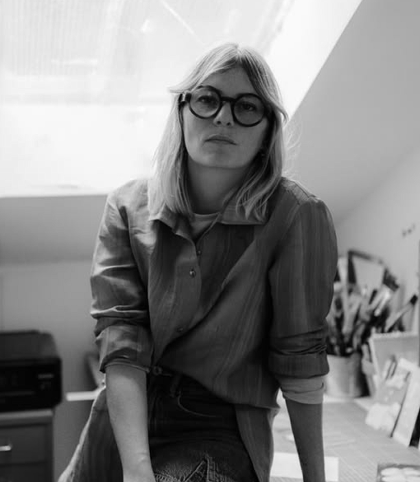
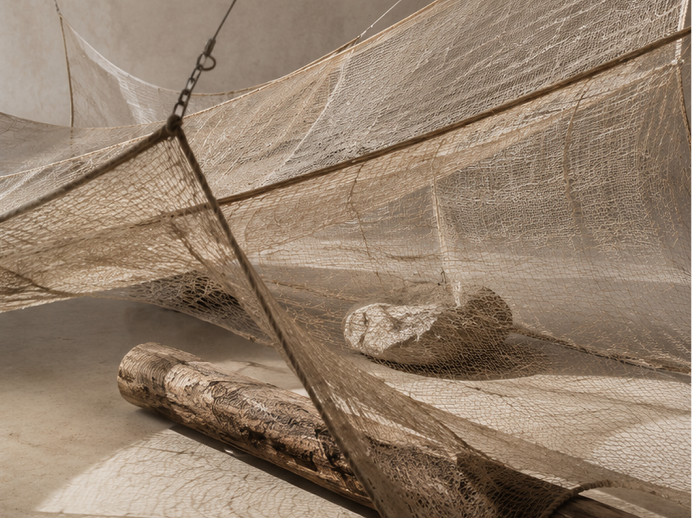

Художница, работающая с мягкими и полупрозрачными материалами — тканями, сетками и органическими структурами.
Исследует состояния натяжения, равновесия и хрупкости в пространстве. Её инсталляции используют физические свойства материалов — вес, прозрачность, движение — чтобы формировать чувственный опыт взаимодействия с пространством.
Точка натяжения (2025 г.)

Инсталляция работает с состоянием натяжения, хрупкости и временного равновесия. Полупрозрачные ткани и тонкая сетка формируют почти невесомый объём, который меняется в зависимости от света и точки зрения. Камни, деревянные элементы и система подвесов создают контраст между лёгкостью материала и физической тяжестью опор.
